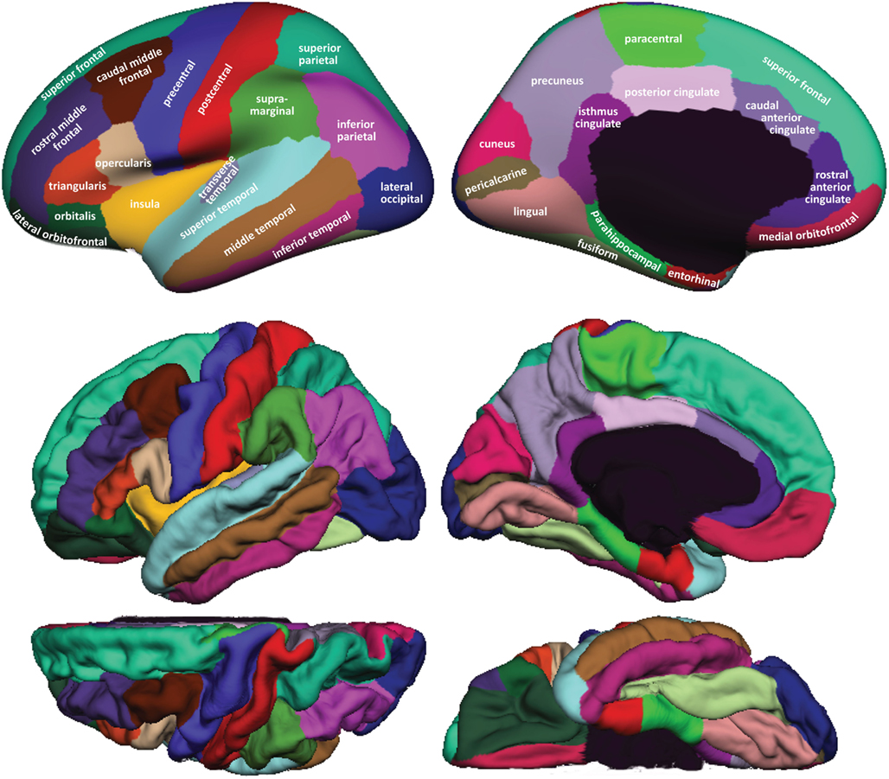

One can drag nodes inside the application and see the recombination of the graph. The action of dragging a node will stick it on the page. Double click on the node to release it. The initial graph is here. A variant of this graph with the lobe coloring is available on this page.
Color code: Right hemisphere, Left hemisphere, Brain stem.
The locations of the regions on the brain are given in the following image. The color code is different. The additional regions not represented in the image corresponds to the inner brain region (subcortical) and the brainstem.
